Esporte
Formação de alunos-atletas na Quadra Vini Jr., com disciplina, cooperação e superação.
O Instituto São Paio nasceu no esporte, cresceu na educação e hoje tem na cultura o seu maior alcance.
Estes são os projetos que desenvolvemos dentro do Espaço Cultural Panorama, no Colubandê, sempre de portas abertas para a comunidade.
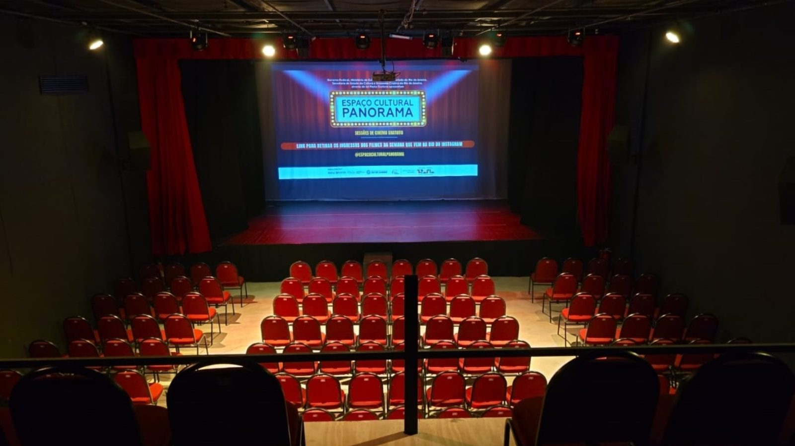
Formação de alunos-atletas na Quadra Vini Jr., com disciplina, cooperação e superação.
Música, teatro, dança, audiovisual e robótica, além da leitura e das oficinas na Casa Amarela.
Teatro, cineclube, biblioteca, podcast e dança no Espaço Cultural Panorama.
Aula de verdade, professor de verdade, no palco e nas salas do Espaço Cultural Panorama. Tem turma para criança, para adulto e para pessoa idosa.
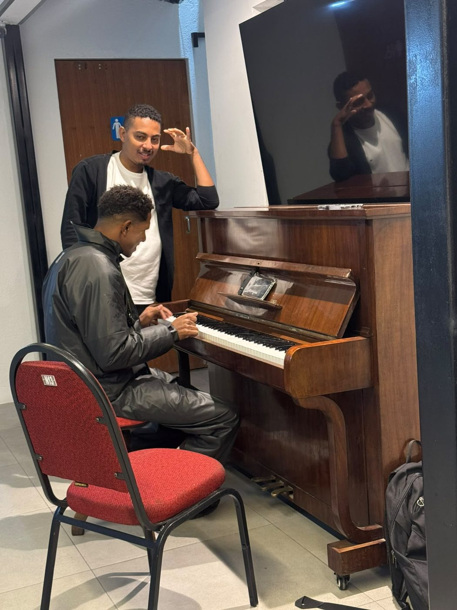
Do primeiro dedilhado à leitura de partitura, no piano do Panorama, com acompanhamento individual.
Falar sobre a turma no WhatsApp de Piano e teclado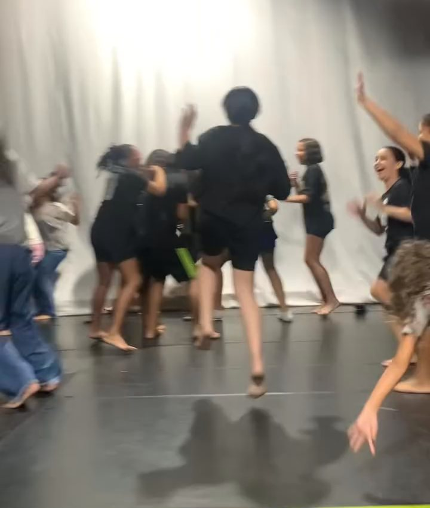
Aulas às quartas com o Curso de Teatro Carol Araújo. Turmas de 6 a 16 anos e a turma Ator e Método, para jovens e adultos a partir de 16 anos.
Falar sobre a turma no WhatsApp de Teatro infantil e adulto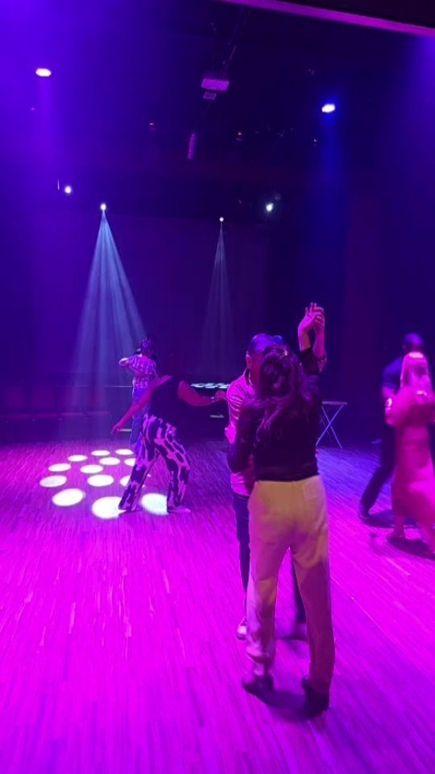
Segundas à noite com a professora Amanda Rosas. Samba, forró, bolero e soltinho, numa turma que virou ponto de encontro do Colubandê.
Falar sobre a turma no WhatsApp de Dança de salãoAcordes, ritmo e repertório, do zero ao primeiro show, com instrumento disponível para quem não tem.
Falar sobre a turma no WhatsApp de ViolãoTécnica vocal, respiração e afinação, para quem canta no chuveiro e para quem já canta na igreja ou na banda.
Falar sobre a turma no WhatsApp de CantoLevada, coordenação e repertório na bateria do estúdio, para quem quer tocar em banda.
Falar sobre a turma no WhatsApp de BateriaA base que segura a música. Groove, leitura e entrosamento com a cozinha rítmica.
Falar sobre a turma no WhatsApp de BaixoSopro, embocadura e repertório popular, do choro ao gospel, com professor residente.
Falar sobre a turma no WhatsApp de SaxofoneContação de histórias, clube de leitura e oficinas culturais na Biblioteca A Casa Amarela.
Falar sobre a turma no WhatsApp de Clube de leitura e oficinasCada turma tem a sua coordenação, e o jeito mais rápido de entrar é falar direto com quem dá a aula. A agenda completa e os avisos de vaga também circulam no nosso grupo de WhatsApp e no Instagram @espacoculturalpanorama.
Não é ensaio de apresentação, é quarta-feira comum.
A criançada chega da escola, larga a mochila, e em dez minutos o palco de 270 lugares vira sala de aula. É assim toda semana, com turmas separadas por idade e uma turma de Ator e Método para quem já passou dos 16.
Criação de uma nova equipe FIRST LEGO League Explore para a temporada BIOGLOW.
O projeto tem como objetivo apresentar as crianças ao universo da robótica educacional, tecnologia (STEM), criatividade e programação por meio de atividades práticas com peças LEGO e trabalho em equipe.
Cinema gratuito no teatro de 270 lugares, com sessão infantil de tarde e sessão adulta à noite.
O projeto é do Espaço Cultural Panorama e ganhou o acervo audiovisual da Casa Amarela como parceiro a partir de 2026.
A noite de “Criadas” está contada por inteiro, com vídeo, na página da Biblioteca A Casa Amarela.
Sempre que o teatro enche, a gente abre espaço para quem produz e vende. Barraca montada no saguão, artesã ao lado da autora, doceira ao lado da plateia. Quem veio ver um filme ou assistir a uma palestra sai levando alguma coisa feita por gente do bairro.
Na noite de “Criadas”, a feira de artesanato ocupou o saguão antes da sessão. No Encontro de Mães Empreendedoras, as bancas foram montadas dentro do teatro, entre a palestra e a roda de negócios.
Não cobramos taxa de quem expõe. O espaço é cedido, o público é o mesmo do espetáculo, e o dinheiro fica com quem produziu.
O Instituto São Paio firmou parceria com a ABRAz, Associação Brasileira de Alzheimer, Regional Rio de Janeiro, e trouxe para o Colubandê uma agenda permanente sobre a Doença de Alzheimer. O primeiro encontro aconteceu em setembro de 2026, no palco do Espaço Cultural Panorama.
A ABRAz explica o que é a Doença de Alzheimer, o que muda na rotina de quem convive com ela e como acolher um familiar que começa a esquecer. Quem chega sai sabendo que existe uma rede de informação, orientação e apoio, e sabendo onde encontrá-la.
A programação é aberta a todo mundo. Vem quem cuida, vem quem é cuidado, vêm as turmas de teatro, dança e música da casa, vêm os leitores da biblioteca e vem quem só passou na porta e resolveu entrar. Não tem inscrição, não tem cobrança e não tem porta fechada.
A roda é com as famílias. A parceria também prevê cursos de formação para cuidadores de idosos e a implantação de um espaço fixo de acolhimento.
Data e horário de cada encontro saem no Instagram @institutosaopaio.
Setembro de 2026. O primeiro encontro da parceria, no palco do Panorama.
Formação que atravessa o bairro e chega em qualquer lugar. Desde 2025 abrimos turmas online sobre produção cultural, audiovisual, tecnologia e língua portuguesa, com inscrição aberta ao público e aula ao vivo pelo Google Meet ou Zoom.
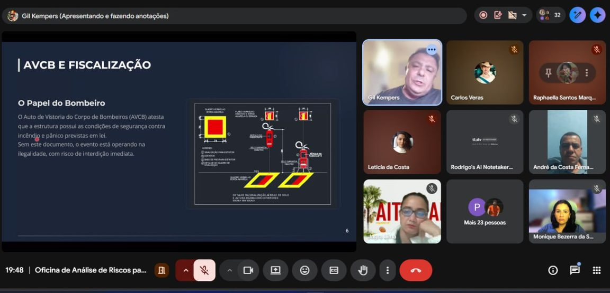
Quem não consegue chegar ao Colubandê entra pelo celular.
As turmas online reúnem produtores culturais, estudantes, artistas e gente que está começando agora, de São Gonçalo e de fora dele, em encontros ao vivo com professores da área.
São aulas curtas, práticas e com material de apoio. Quem participa sai sabendo escrever um projeto, operar uma câmera, gravar um podcast ou montar um site.
O que abrimos neste ano
São Gonçalo oferece oficina online de análise de riscos em eventos
Ler a matéria no Radar News RJInstituto São Paio disponibiliza oficinas de formação sobre produção de eventos e elaboração de projetos culturais
Ler a matéria no Leste Fluminense NewsO que já rodou
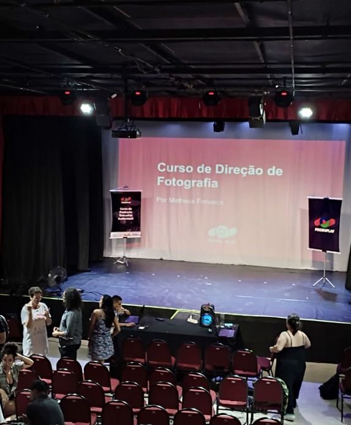
Curso de audiovisual (podcast, drone, câmera, direção de arte) com a Produplay, via Lei Paulo Gustavo.
Ver no Instagram do Instituto2024
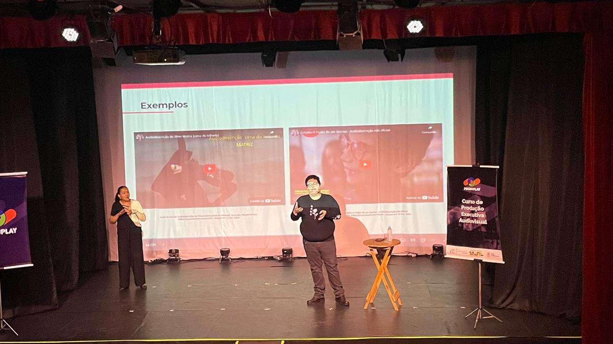
Curso “Pensar Acessibilidade no Audiovisual”, em parceria com a Produplay e a Lei Paulo Gustavo.
Ver no Instagram do Instituto2024
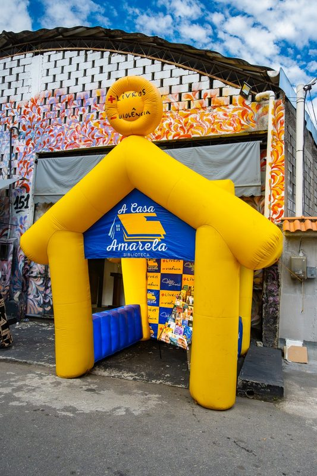
Campanha que arrecadou livros e formou o acervo da Casa Amarela. Na biblioteca, Liberte um Livro é também o nosso livro de rua, a biblioteca inflável itinerante que monta estante na calçada e distribui leitura para quem passa.
Ver as fotos na página da bibliotecaEm andamento
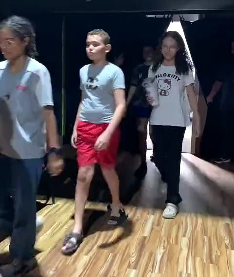
Aulas às quartas no Espaço Cultural Panorama, com o Curso de Teatro Carol Araújo. Tem turma infantil, turma juvenil e a turma Ator e Método, para jovens e adultos.
Falar sobre a turma no WhatsAppEm andamento
Segundas à noite com a professora Amanda Rosas. Samba, forró, bolero e soltinho, para adultos e pessoas idosas, com baile no palco de 270 lugares.
Ver o vídeo no InstagramEm andamento
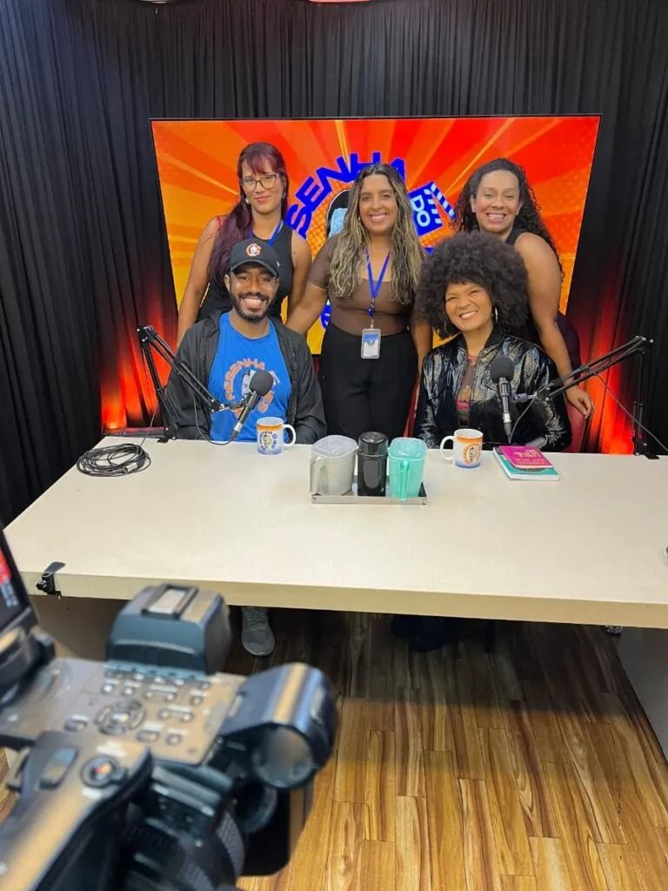
Produzido no estúdio do Panorama, valoriza as trajetórias de multiartistas fluminenses.
Ler a matéria no Radar News RJ2025 a 2026
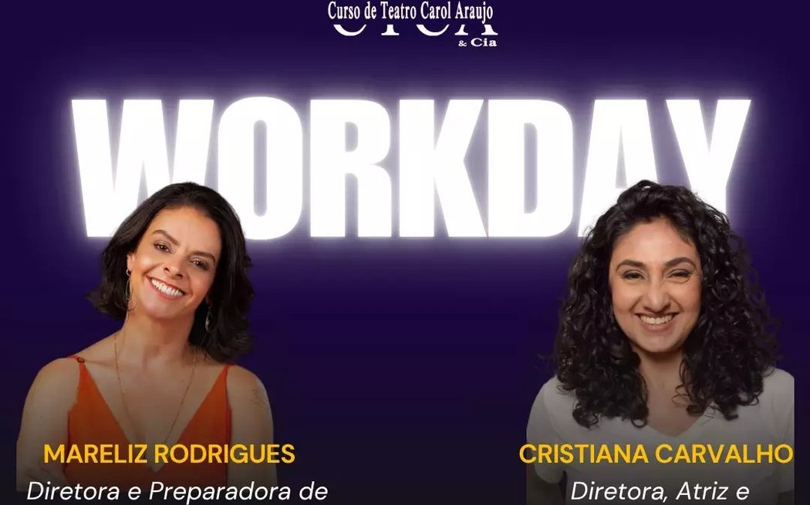
Workday sobre interpretação para TV e cinema em 02/08/2026, com Mareliz Rodrigues e Cristiana Carvalho. Palestra sobre o mercado audiovisual pela manhã e simulação de teste de elenco à tarde.
Ver no Instagram do Panorama2026
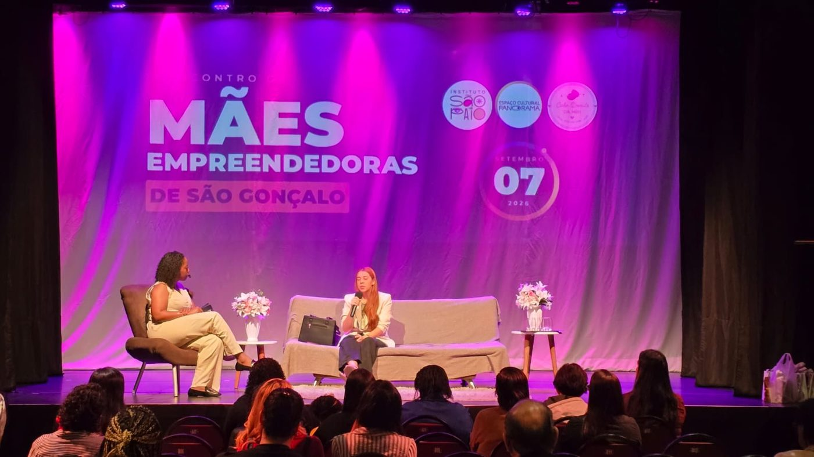
Primeiro encontro de mães empreendedoras da cidade, com palestras, rodas de negócio e escuta, realizado no Panorama em 07/09/2026. Entrada gratuita.
Ver as fotos na página de impacto2026
Sessões gratuitas de cinema no teatro do Panorama desde 2024, com roda de conversa depois do filme, integradas ao acervo audiovisual da Casa Amarela.
Ver as fotos do CineclubeDesde 2024
Transformar a Rua Odete São Paio em um grande corredor de cultura, com novos espaços para a cidade. A biblioteca foi a primeira etapa, e já está aberta.
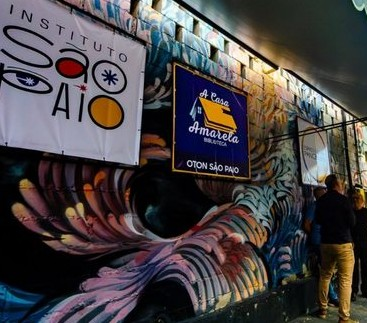
Entregue em 2026
Primeira etapa do corredor cultural, já em funcionamento. Acervo físico e digital, oficinas e sessões de cinema, em parceria com o Instituto Ciclos do Brasil.
Conhecer a bibliotecaProjeto futuro
Espaço para feiras de negócios e eventos, fomentando a economia criativa de São Gonçalo.
Saiba mais no InstagramProjeto futuro
Orientação para adaptar moradias às mudanças do clima, reduzindo riscos para as famílias.
Saiba mais no Instagram